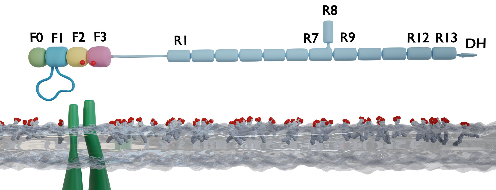
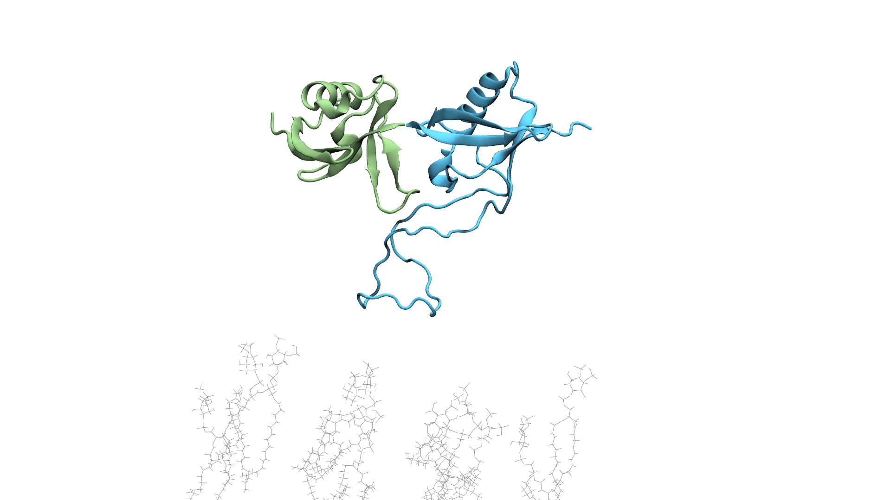
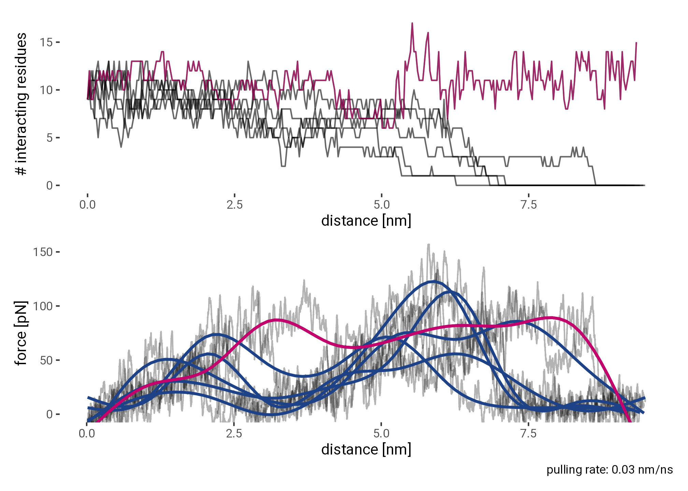
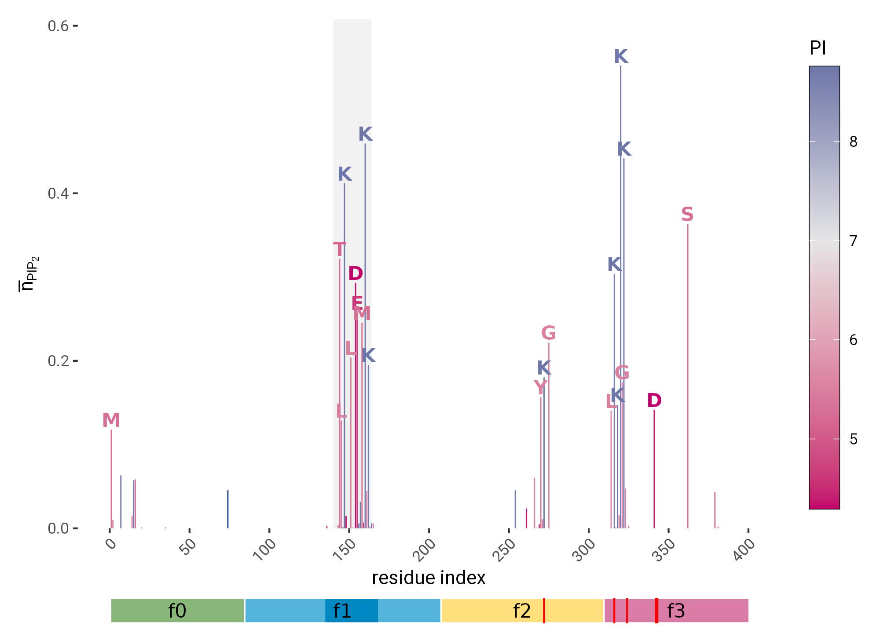
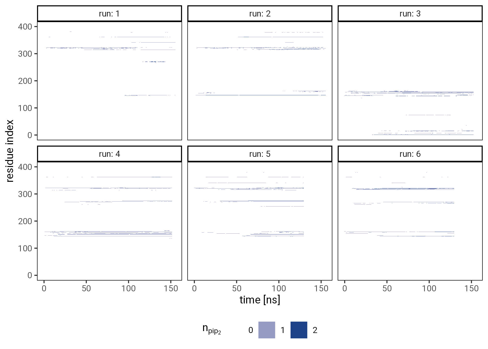

Intrinsically disordered region of talin’s FERM domain functions as an initial PIP2 recognition site
2021-09-07
Focal adhesions mediate the interaction of the cytoskeleton with the extracellular matrix (ECM). Cell-ECM adhesion is used by almost all cells both during development and homeostasis and ranges from dynamic to permanent. As such, it is an important process in health and disease alike. Talin is a central regulator and adaptorprotein of the multiprotein focal adhesion complexes and is responsible for integrin activation and force-sensing. We evaluated direct interactions of talin with the membrane lipid phosphatidylinositol 4,5-bisphosphate (PIP2) by means of molecular dynamics simulations. A newly published autoinhibitory structure of talin, where common PIP2 interaction sites are covered up, sparked our curiosity for a hitherto less examined loop as a potential site of first contact. We show that this unstructured loop in the F1 subdomain of the talin1 FERM domain is able to interact with PIP2 and can facilitate further interactions by serving as a flexible membrane anchor. This work presents the dynamics of the interaction and identifies key residues. Further, we surveyed the effect of a physiological PIP2 enrichment at focal adhesion sites on the dynamics of talin through force-probe molecular dynamics simulations. The results provide backing for the direct involvement of PIP2 in the localization and activation of talin.
This is a draft and as such subject to change.
You can find the poster that goes along with the paper presented at the Annual Meeting of the Biophysical Society 2022 in your favorite format here: web/html, print/pdf
Introduction
It is critical for cells to mechanically sense their surroundings at cell adhesion sites for a multitude of biological processes. Contact with the extracellular matrix and surroundin cells regulates growth, differentiation, motility and even apoptosis (1–4). The multiprotein focal adhesion complex is responsible for translating between biochemical and mechanical signals, where both directions, outside–in and inside–out activation, are being investigated (5, 6).
At the center of the focal adhesion complex sits the adaptorprotein talin, which dynamically unfolds and refolds under force (7). A schematic of Talin can be seen in Figure 1 (a). Through direct interaction with integrin tails (dark green), which interact with collagen fibers via their heads, it links the extracellular matrix to the intracellular cytoskeleton by directly interacting with acting and increasing integrins affinity for ligands, thereby activating it (8).


Materials and Methods
Molecular dynamics with GROMACS
Molecular dynamics simulations where performed with GROMACS (10, 11) version 2020.03 (12). A crystal structure of the Talin FERM domain by Goult et al. (9) with the PDB-ID 3IVF was used as the basis of all simulations.
The missing F1 domain loop between residues L133 and W144 was modeled using MODELLER (13, 14) via the interface to Chimera (15), followed by equilibration with GROMACS. The resulting conformation was compared to an NMR structure of the F1 domain (PDB-ID 2KC2) by Goult et al. (16).
The missing residue M1 was also added. The missing residues I399 and L400 where not modeled, leaving us with with a continuous sequence from residue 1 to 398. Simulations where performed with the CHARM36 force field. Topologies, including the membrane, where generated with the CHARM-GUI web app (17–19) and GROMACS tools. All simulations used the TIP3P water model and where neutralized with 0.15 mol/L of NaCl. A a 6-step equilibration was performed after gradient decent energy minimization while gradually relieving restraints on protein and membrane atoms. Production runs use a timestep of 2 fs, a Verlet cut-off scheme for Van-der-Waals interactions and the Particle Mesh Ewald (PME) method for long-range electrostatics. NTP-ensembles where achieved by Nosé-Hoover temperature coupling (20, 21) and Parinello-Rahman pressure coupling (22). An example .mdp-file can be found in the supplementary materials at Section 8.2.1.
The initial equilibrium simulation of the completed FERM domain was run for 75 ns. Subsequently, the root mean squared fluctuation (RMSF) was calculated with GROMACS tools.
The F0F1 FERM sub domains (residues 1 to 197) were simulated to evaluate protein-membrane association using a rotational sampling approach. This entailed placing the protein 1.5 nm away from a 1-palmitoyl-2-oleoyl-glycero-3-phosphocholine (POPC) membrane in a total of 60 orientations spanning a rotation of 360 degrees. 6 replicates of each orientation where run for 200 ns each. However, due to a hardware failure, 6 of these 360 runs are only 50 to 150 ns long. Of the 119 lipids in the upper leaflet of the POPC membrane, 12 lipids were replaced with PIP2, which results in a physiological concentration of 10% PIP2.
From this rotational sampling, we selected representative conformations with high protein-membrane interaction as the basis of 6 equilibrium simulations of the complete FERM domain over a POPC membrane with 26 PIP2 lipids out of a total of 273 lipids in the upper leaflet. Each simulation ran for 400 ns. The initial conformations for perpendicular pulling simulations of the F0F1 subdomains to gauge interaction strength where also chose from the rotational sampling set.
To compare the effects of PIP2 on the dynamics, a system containing only 1 % PIP2 (3 PIP2 molecules in 273 lipids) was created from the enriched system by programmatically exchanging lipid head groups via a python script. The enriched and non-enriched systems where then subjected to force-probe MD simulations.
Automation, Data Analysis and Availability
Setup scripts written in bash are available for all simulations shown in this work. Plots were generated with R using ggplot2 (23). Interactive structure representations are embedded using Mol* (molstar?). Schematic visualizations were rendered with blender (24) and VMD (25). Files relevant to this paper that are too big to be uploaded to this repository, such as trajectories and blender files, will be uploaded to a separate location.
This paper and the matching poster were generated with quarto (26) and Rmarkdown (27, 28).
Results
The F1 loop can act as a point of first contact TODO:



The F1 loop can facilitate further contacts TODO:



Lateral Pulling of the FERM domain
Additional simulations pulling the whole FERM domain at a physiological angle of 30° laterally over a membrane with differing concentrations of PIP2 are currently running.
Discussion
Conclusion
Acknowledgments
This project has received funding from the European Research Council (ERC) under the European Union’s Horizon 2020 research and innovation programme (grant agreement No. 101002812).
Supplementary Material


| Domain | From | To |
|---|---|---|
| F0 | 1 | 84 |
| F1 | 85 | 207 |
| F2 | 208 | 309 |
| F3 | 310 | 400 |
| Residue | Mean #PIP2 |
|---|---|
| M 1 | 0.188 |
| K 15 | 0.184 |
| R 30 | 0.173 |
| R 35 | 0.245 |
| R 74 | 0.124 |
| K 98 | 0.176 |
| R 118 | 0.209 |
| T 144 | 0.299 |
| L 145 | 0.168 |
| K 147 | 0.263 |
| L 151 | 0.325 |
| D 154 | 0.248 |
| E 155 | 0.261 |
| M 158 | 0.272 |
| K 160 | 0.254 |
| K 162 | 0.181 |
| L 193 | 0.200 |
| R 194 | 0.101 |
| Residue | Mean #PIP2 |
|---|---|
| M 1 | 0.118 |
| T 144 | 0.322 |
| L 145 | 0.129 |
| K 147 | 0.412 |
| L 151 | 0.204 |
| D 154 | 0.293 |
| E 155 | 0.257 |
| M 158 | 0.246 |
| K 160 | 0.459 |
| K 162 | 0.195 |
| Y 270 | 0.156 |
| K 272 | 0.180 |
| G 275 | 0.222 |
| L 314 | 0.141 |
| K 316 | 0.304 |
| K 318 | 0.148 |
| K 320 | 0.552 |
| G 321 | 0.174 |
| K 322 | 0.442 |
| D 341 | 0.142 |
| S 362 | 0.363 |
Trajectories
Scripts
Production run parameters
integrator = md
dt = 0.002
nsteps = 100000000
nstxout = 5000
nstvout = 5000
nstfout = 50000
nstcalcenergy = 100
nstenergy = 1000
nstlog = 1000
cutoff-scheme = Verlet
nstlist = 20
rlist = 1.2
coulombtype = pme
rcoulomb = 1.2
vdwtype = Cut-off
vdw-modifier = Force-switch
rvdw_switch = 1.0
rvdw = 1.2
tcoupl = Nose-Hoover
tc_grps = SYSTEM
tau_t = 1.0
ref_t = 303.15
pcoupl = Parrinello-Rahman
pcoupltype = semiisotropic
tau_p = 5.0
compressibility = 4.5e-5 4.5e-5
ref_p = 1.0 1.0
constraints = h-bonds
constraint_algorithm = LINCS
continuation = yes
nstcomm = 100
comm_mode = linear
comm_grps = SYSTEM
refcoord_scaling = com